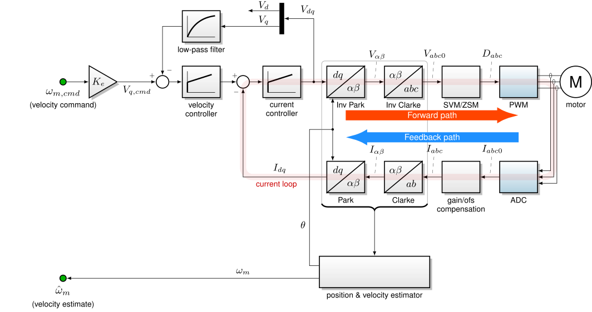

5.8. 电压控制¶
5.8.1. 概述¶
电压控制是速度控制的替代方案。此功能提供了使用 q 轴电压 \(V_q\) 而非速度作为外环控制回路。电压控制作用于反电动势作为速度控制的代理，带有一定的柔性（允许速度随转矩负载增加而降低）。速度命令 \(\omega_{m,cmd}\) 被转换为等效电压 \(V_{q,cmd}\) ，使用电机的反电动势常数。描述电压控制的修改后 FOC 框图如 图 5.119所示。此功能将速度控制器重新用作具有不同控制参数的电压控制器。

图 5.119 以 q 轴电压作为外环控制回路的 MCAF 矢量控制框图。¶
电压控制可以提供高带宽的速度控制替代方案。在某些电机控制系统中，传统的速度环可能受带宽限制，因为误差或控制延迟（相位滞后）不允许稳定的高带宽电压控制环。在这类系统中，电压控制器可以更快响应，仅受电流环带宽限制。
需要高带宽且无法容忍速度估计器相位滞后的系统可以改用电压控制。这将电流控制器的 q 轴电压经滤波后反馈作为速度控制器（重新用作电压控制器）的反馈项。电压控制器在 \(V_{q,cmd} = K_e \omega_m + I_q R + \omega_e L_d I_d\)时达到平衡。当 \(I_d = 0\) （无弱磁）时，这实际上是一个带有由定子 IR 压降引起的柔性或“下垂”的速度控制器。电压控制器产生的相位滞后可以小于位置和速度估计器，在某些应用中下垂行为可能是有利的。
注意： 此功能尚未经过广泛测试。本节中的指南是初步的，基于目前有限的测试。未来的工作可能有助于改善此指南。
5.8.2. 电机参数对机械柔性的影响¶
电压控制的转矩柔性可以解析地表述如下：
其中 \(\alpha_\psi = \tfrac{N_p L_d I_d}{K_e}\) 捕捉了由于非零 d 轴电流引起的弱磁效应， \(B' = \tfrac{3K_e{}^2}{2R}\) 捕捉了对负载转矩的机械柔性。
公式 5.60 可以从 PMSM 电压方程——公式 5.12 ——中推导，分为三步：
将导数 \(dI_q/dt\) 设为零，得到 \(V_q = R_s I_q + \omega_e L_dI_d + K_e \omega_m\)
代入电机械转矩方程： \(T_{em} = \frac{3}{2} K_e I_q\)
代入电压控制命令： \(V_{q,cmd} = K_e \omega_{m,cmd}\)
并重写以关联速度命令、速度和转矩（当电流处于稳态时）。
当 \(I_d = 0\) （无弱磁）时，机械柔性随反电动势增大而增大，随定子电阻增大而减小。
5.8.3. 选择算法参数¶
电压控制器不是自动调参的；控制参数必须手动调整。目前，电压环的调参指南有限。电压环的经验调参是可接受的。一种方法是从默认增益（\(K_p = 0.1/R\)， \(\tau = 100ms\)）开始，逐渐增加 \(K_p\) 直到出现不稳定的迹象（电流环中噪声增加），然后增加 \(K_i\) 直到出现进一步不稳定的迹象。（固件实现使用 \(K_p\)， \(K_i\)，因此运行时调整 \(\tau\) 不直接可行；而是调整电压环 \(K_p\)， \(K_i\).)